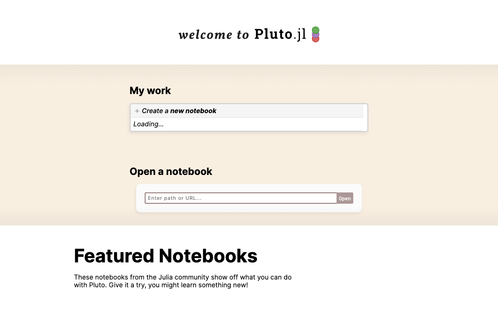
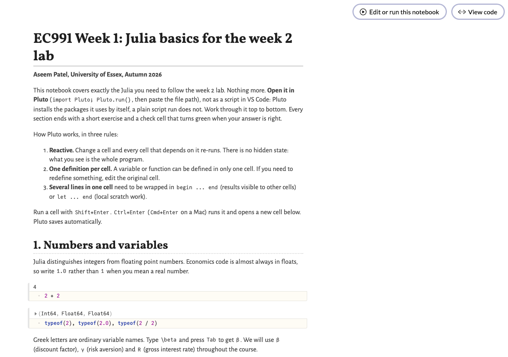
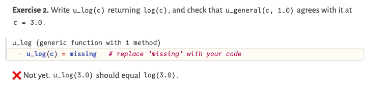

EC991 Topics in Macroeconomics · Week 1 Tutorial
A self-paced walkthrough. By the end you will have a working Julia installation, an editor that talks to it, a GitHub repository with your first commits, a Pluto notebook that teaches you the Julia you need for week 2, and an AI coding agent you know how to supervise.
Work through the parts in order. Install steps have tabs for macOS, Windows and Linux; pick yours once and the page remembers it. Every code block has a copy button. The checklist at the end tracks what you have done.
Three years ago the hard part of computational macro was syntax: which bracket, which index, why the loop runs off the end of the array. Language models have made that part cheap. A good agent will write a value function iteration in Julia on request. So why spend a tutorial on tooling?
Because the barrier is lower, not gone. The agent writes; you decide whether what it wrote is right. That decision needs you to read code fluently, know what the answer should look like, and test against a prediction. In this course every piece of numerical output gets checked against something you know, a closed form, a theorem, a limit. An agent cannot do that for you if you do not know what to check. Florian Oswald puts it well in his programming course: programming with AI in 2026 mostly means you supervise the loop. The habit to build this term is to check what the agent did before you trust it.
On languages. I teach in Julia: it is fast, reads like maths, and the heterogeneous-agent literature increasingly uses it. Wherever I can, I provide a Python version of the same code. For the problem sets you may use whichever language you prefer, as the module outline says. The ideas (grids, iteration, interpolation, distributions) transfer; the syntax does not matter much once you have seen two languages side by side, and Part 8 does exactly that.
Everything else in this tutorial is installed from a terminal, so start there. Git is the version control system used by every repository in this course, including the one you will clone in Part 6.
Open Terminal (Spotlight: ⌘+Space, type Terminal). Git comes with Apple's command line tools. Type:
git --versionIf a dialog offers to install the command line tools, accept, wait, and run the command again.
Install Git for Windows and accept the defaults. It gives you Git Bash, a Unix-style terminal, and the git command. Open Git Bash from the Start menu and type:
git --versionJulia and VS Code run natively on Windows, so you do not need the Windows Subsystem for Linux for this course. The one place it helps is opencode (Part 9), whose documentation recommends WSL; the Windows tab there gives alternatives.
Use your usual shell. On Debian or Ubuntu:
sudo apt update && sudo apt install git -y
git --versionTell Git who you are. This is written into every commit you make. Use the email address attached to your GitHub account (Part 6).
git config --global user.name "Your Name"
git config --global user.email "you@essex.ac.uk"Windows only, so that line endings match everyone else's: git config --global core.autocrlf false and git config --global core.eol lf.
Five shell commands cover ninety per cent of what you need: pwd (where am I), ls (what is here), cd folder (go there; cd .. goes up), mkdir name (make a folder), cat file (print a file). Make a folder for the course now and go into it:
mkdir ec991 && cd ec991
pwdDo not download Julia from a web page. Install juliaup, a small manager that installs Julia, keeps it updated, and lets you switch versions. If you have an old manual install of Julia, uninstall it first.
curl -fsSL https://install.julialang.org | shAccept the defaults. Close and reopen Terminal so that julia is on your path. Homebrew users can use brew install juliaup instead.
In PowerShell or Git Bash:
winget install --name Julia --id 9NJNWW8PVKMN -e -s msstoreOr install "Julia" from the Microsoft Store. Close and reopen the terminal afterwards.
curl -fsSL https://install.julialang.org | shIf it complains about permissions, the juliaup wiki has a page on it; the simplest fix is usually to make sure ~/.juliaup/bin is on your PATH and open a new shell.
Check it worked, and that you have the current release (1.12 at the time of writing; anything from 1.10 upward is fine for the course):
juliaup status
juliaYou are now in the REPL, Julia's interactive prompt. Type 1 + 1 and press Enter. Then try these four prompt modes; each is entered by typing one character at the start of an empty line, and left with Backspace:
| Key | Mode | Example |
|---|---|---|
] | Package manager | add Pluto, st (status), up (update) |
? | Help | ?maximum shows the documentation of maximum |
; | Shell | ;ls runs the shell command ls |
\beta then Tab | Unicode input | gives β; works for any LaTeX name |
While you are here, install Pluto, which Part 7 needs. Press ] and type:
add PlutoPress Backspace to return to the julia> prompt and Ctrl+D (or exit()) to leave. Later, juliaup update in the terminal brings Julia up to date.
The REPL is where you experiment; VS Code is where you write files. Its Julia extension links the two: you edit a file, press a key, and the line runs in a REPL inside the editor.
julialang. It finds your juliaup installation by itself.ec991.hello.jl with these two lines, put the cursor on the first and press Shift+Enter. A Julia REPL opens at the bottom and runs the line. Press it again for the second line.β = 0.96
sum(β^t for t in 0:100)Shortcuts worth learning on day one (Mac users: ⌘ for Ctrl except where shown):
| Keys | What it does |
|---|---|
| Shift+Enter | Run the current line or selection in the REPL and move down |
| Ctrl+F5 | Run the whole file |
| Ctrl+Shift+P | Command palette. Try > Julia: Start REPL and > Git: Clone |
| Ctrl+` | Toggle the integrated terminal |
| Ctrl+Shift+G | Source control pane (Git), used in Part 6 |
Plots appear in a separate pane inside VS Code. Hovering over a variable in the editor shows its value once the code has run. If you ever want a REPL outside VS Code, start it with julia --project --threads auto from the folder; inside VS Code both of those are set for you.
Julia keeps a record of which packages a project uses in two files: Project.toml (what you asked for) and Manifest.toml (the exact versions that were resolved). Together they let someone else, or you on another machine, reproduce your setup exactly. Four package-mode commands do almost everything:
Command (after ]) | Meaning |
|---|---|
activate . | Use the project in the current folder (creates one if none exists) |
add Plots | Add a package to the active project |
instantiate | Install everything listed in the project's Project.toml and Manifest.toml |
st | Show which project is active and what is installed |
add go to whichever one is active, so read the prompt first.Read the prompt. (@v1.12) pkg> means the global environment, shared by everything; (ec991) pkg> means the project in your folder. Keep course packages in the project and only tools like Pluto in the global environment. The classic mistake is to add a package while the wrong environment is active and then wonder why using Plots fails elsewhere; the fix is activate . in the right folder.
Try it. In the VS Code REPL (it opens in your ec991 folder), press ], then:
activate .
add Plots
stTwo new files appear in the folder. Pluto notebooks (Part 7) manage their own environment inside the notebook file, so you will not type these commands for notebooks, but you will for every script.
Download week01_check.jl from Moodle or from the course repository on GitHub (Part 6) into your ec991 folder. It needs no packages beyond the standard library. Run it from the terminal, or open it in VS Code and press Ctrl+F5:
julia week01_check.jlYou should see seven lines ending in PASS. A FAIL comes with a hint on the same line. Read the script: it does, in miniature, what the week 2 lab does at full scale, a maximisation over a grid with infeasible choices set to minus infinity, and a backward loop.
If the smoke test passes, your Julia installation is done. Everything from here on is about working habits rather than installation.
Git records the history of a folder as a sequence of commits, snapshots with a message, an author and a time. GitHub is a website that hosts Git repositories so that you can back them up, share them and collaborate. Three reasons you want this: your code is never lost, you can always go back to a version that worked, and when an AI agent edits your files you can see exactly what it changed.
ec991-work, make it private, tick Add a README, choose the Julia template for .gitignore. Create it.> Git: Clone, paste the address, and choose where to put it (your ec991 folder is fine). Say yes to opening it. The first time, VS Code will ask you to sign in to GitHub in the browser.hello.jl into this folder. Open the Source Control pane (Ctrl+Shift+G). You will see it listed under Changes. Click + to stage it, type the message add hello.jl, click Commit, then Sync Changes to push it to GitHub.git status and git diff look at the left end; GitHub shows the right end.The same four steps from the command line, which you will see in every tutorial and which the AI agent in Part 9 also uses:
git status # what has changed since the last commit
git add hello.jl # stage it (git add . stages everything)
git commit -m "add hello.jl" # record the snapshot
git push # send it to GitHub
git pull # fetch what changed on GitHub (e.g. edits from another machine)
git diff # show exactly what changed in unstaged files
git log --oneline # the history, one line per commitThree habits. Commit small and often, with a message that says what and why. Use .gitignore for anything generated (output files, compiled PDFs, Julia's Manifest.toml is a matter of taste; keep it for course work). Never commit secrets such as API keys. And one escape hatch: if your local copy is a mess and GitHub has the version you want, git reset --hard origin/main throws away local changes and matches the server. It is destructive, so back up first.
Everything for this course, this page, the notebooks, the slides and the lab files, is on Moodle and on the course GitHub repository, github.com/Aseem-Patel/EC991. Clone it next to your own repository with > Git: Clone, and update it before every tutorial with > Git: Pull (or git pull). Do not edit files inside the course repository; copy them into ec991-work first, otherwise pulling will conflict with your changes.
Want more? The QuantEcon lecture on version control covers branches, pull requests, forks and merge conflicts with the same VS Code workflow, and the GitLens extension shows who changed each line and when.
A Pluto notebook is a web page of Julia cells that runs in your browser. It differs from Jupyter in one important way: it is reactive. Change a cell and every cell that depends on it re-runs, like a spreadsheet. There is no hidden state, so a notebook always means what it shows. That makes Pluto an excellent place to explore a model and a poor place to run a long estimation. We use it in the labs for the exploring, and scripts for the heavy work.
Run it from VS Code. Open your ec991 folder, open the integrated terminal (Ctrl+`), type julia to get a REPL, then:
import Pluto
Pluto.run()Leave that terminal alone: it is now the Pluto server, and closing it closes Pluto. A browser tab opens on the welcome page. Download week01_julia_basics.jl from Moodle or the course repository into your ec991 folder, paste its full path into the Open a notebook box and click Open. The first time it opens, Pluto installs Plots and PlutoUI inside the notebook's own environment.

The notebook is a .jl file, so VS Code will happily run it with Ctrl+F5 or Shift+Enter. Outside Pluto that stops with Package Plots not found in current path: a script looks for packages in your active environment, and only Pluto installs a notebook's packages for you. Open it through Pluto as above. If you do want to run it as a script, first type ] add Plots PlutoUI in that environment.
Three rules that trip up everyone the first time:
begin ... end when other cells should see the results, and let ... end for scratch work that stays local.using Plots and Pluto adds it to the notebook's environment, recorded inside the .jl file, so your notebook is reproducible by anyone who opens it.
| Keys | What it does |
|---|---|
| Shift+Enter | Run the cell |
| Ctrl+Enter | Run the cell and add a new one below |
| Ctrl+S | Run all changed cells (Pluto saves continuously anyway) |
| Eye icon (left of a cell) | Hide or show the code, useful for text cells |
| Export (top right) | Save as HTML or PDF, or copy the .jl file |
A Pluto notebook is a plain .jl file, so it lives happily in Git and can even be run as a script. VS Code also runs Jupyter notebooks with a Julia kernel if you prefer that format; the course material is in Pluto, but the code is the same.
The notebook week01_julia_basics.jl is the core of this tutorial. It covers exactly what the week 2 lab needs, in eight short sections, each ending with an exercise and a check cell that turns green when you have it right:
u.(a)for t in T:-1:1), while with a tolerance, comprehensions, the ternary, maximum and argmaxExercise 5 has you compute a present value with a loop and a running total, then check it against the one-line version. When all three check cells are green, you are ready for the week 2 lab.

missing with your answer and the cell below turns green.For those who know Python (NumPy), or who plan to work in it, here is the same operation in both. A file week01_python_basics.py with the notebook's content in Python is on Moodle and in the course repository. The differences that matter: Julia indexes from 1 and includes the end of a range; Python indexes from 0 and excludes it. Julia broadcasts with a dot; NumPy broadcasts automatically.
| Task | Julia | Python / NumPy |
|---|---|---|
| Grid of 7 points | a = range(0, 3, length=7) | a = np.linspace(0, 3, 7) |
| First, last element | a[1], a[end] | a[0], a[-1] |
| CRRA utility | u(c) = c^(1-γ)/(1-γ) | def u(c): return c**(1-g)/(1-g) |
| Apply to a grid | u.(a .+ 1) | u(a + 1) |
| Backward loop | for t in T:-1:1 | for t in range(T, 0, -1): |
| Infeasible choice | c > 0 ? u(c) : -Inf | u(c) if c > 0 else -np.inf |
| Max and its index | maximum(v), argmax(v) | v.max(), v.argmax() |
| Zero matrix | zeros(n, T+1) | np.zeros((n, T+1)) |
| Comprehension | [f(x) for x in a] | [f(x) for x in a] |
| Plot | plot(a, u.(a)) | plt.plot(a, u(a)) |
| Time it | @time f(x) | %timeit f(x) (in Jupyter) |
An agent is a language model wrapped in a loop that can read your files, edit them, and run commands, showing you the result each time. Four words help keep that straight. The model is text in, text out, with no memory and no access to your disk. The harness is the programme around it that builds the context, runs the tools and shows you what happened; opencode is a harness. Tools are the actions it can take: read a file, write a file, run a command. Skills or instruction files (an AGENTS.md in your project) encode your own judgement so you do not have to repeat it.
We use opencode: open source, runs in the terminal or inside VS Code, and works with many model providers, including free ones. If you already use Claude Code, Codex, Cursor or Copilot Chat, you may keep using it; the habits below are the same.
curl -fsSL https://opencode.ai/install | bash
opencode --versionHomebrew: brew install anomalyco/tap/opencode.
The opencode documentation recommends running it inside WSL (Windows Subsystem for Linux): in an administrator PowerShell run wsl --install, restart, open the Ubuntu app, then use the Linux command. If you would rather stay native, any of these works from PowerShell:
npm install -g opencode-ai # needs Node.js from nodejs.org
scoop install opencode # or: choco install opencode
opencode --versioncurl -fsSL https://opencode.ai/install | bash
opencode --versionopencode needs a provider. Start it in any folder with opencode, type /connect, and pick one. Then /models to choose a model. Options, best first for a student budget:
| Provider | Cost | How |
|---|---|---|
| GitHub Copilot | Free with the Student Developer Pack | /connect › GitHub Copilot › open github.com/login/device and enter the code. Gives access to several strong models. Some models need a higher plan. |
| OpenRouter | Free models available (filter by price = free; names end in :free) | Create a key at openrouter.ai/settings/keys, then /connect › OpenRouter › paste key |
| Google Gemini | Free tier, rate limited, no card | Key from aistudio.google.com, then /connect › Google |
| Anthropic, OpenAI | Pay per use | /connect › provider › paste an API key |
An API key is a password that spends money. opencode stores it outside your project, which is right. Never paste a key into a file you commit, a chat, or a notebook. If one leaks, revoke it on the provider's site immediately.
Inside VS Code: run opencode once in the integrated terminal and the extension installs itself. Afterwards ⌘+Esc (Mac) or Ctrl+Esc opens it in a split terminal, with your current file and selection shared as context.
If you are eligible for the GitHub Student Developer Pack, you also get GitHub Copilot Chat built into VS Code, free while you remain a verified student (GitHub re-checks eligibility every month, so in practice for the whole of your degree). It suggests code as you type and opens a chat panel next to your files, which is handy for quick questions about a line or an error message.
The same rules apply as for opencode: read every suggestion before you accept it, and check the result against something you know. If GitHub has paused new student sign-ups when you apply, use one of the free providers in the table above.
Do this in your ec991-work repository, with a clean Git state (git status shows nothing to commit). Git is what makes supervision possible: every change the agent makes is a diff you can read.
opencode in the folder. Press Tab until the footer says Plan. In plan mode the agent proposes changes and makes none.In hello.jl, add a function pv(y; β=0.96, T=10) that returns the present
value of a constant income y received in periods 0 to T. Add a check that
pv(1.0; T=10_000) is within 1e-6 of 1/(1-β), and print the result.git diff. Read every changed line. Then julia hello.jl: does the check pass? If a line is unclear, ask the agent to explain that specific line, and do not accept the explanation if it does not match what the code does.git commit -am "agent: add pv() with closed-form check, reviewed". If the diff is wrong, say so to the agent and iterate, or /undo./init. The agent reads your repository and writes an AGENTS.md file describing it. Open the file, correct anything wrong, and add one line of your own: "Every numerical function must come with a check against a closed form or a known limit." From now on every session starts by reading that file. Commit it.You may use AI assistants for the problem sets and in the labs. One condition: be able to explain and defend every line you hand in. The problem sets assess your understanding of the models and methods, not the agent's. Code you cannot explain when asked in a tutorial is treated as not your work.
Two cautions from experience. Agents produce absolute paths, so "file not found" errors are often a relative-versus-absolute confusion. And rm is permanent: check any command that deletes before you let an agent run it. The general rule is the one Oswald teaches: agent drafts, you verify.
The tutorial opens with a short talk on why these tools are here: Julia, VS Code, Git, Pluto and an AI coding agent, one reason each. After that you work through this page in order, on your own laptop and at your own pace, and I walk around to unblock anyone who is stuck. Each part ends with something you can see working:
git --version prints a version.1 + 1 in the REPL, and juliaup status shows a version.Project.toml appears in your folder.week01_check.jl prints seven PASS lines.git diff, run, and committed; AGENTS.md exists.Stuck? Check the troubleshooting table in Part 11 first, then ask. Finished early? Do sections 6 to 8 of the notebook, then the Julia and Python table in Part 8.
For week 2: finish the notebook, including sections 6 to 8, and pull the course repository (github.com/Aseem-Patel/EC991).
Tick these off. The page remembers your ticks on this device.
| Symptom | Cause and fix |
|---|---|
julia: command not found | The terminal was open before the install. Close it and open a new one. |
Package Plots not found | Wrong environment active. In the REPL: ] activate . then ] instantiate or ] add Plots. |
Package Plots not found when running the notebook | You ran the .jl notebook as a script. Open it through Pluto (Part 7), or ] add Plots PlutoUI first. |
Prompt says (@v1.12) pkg> but you expected your project | Run activate . from inside the project folder. |
| Pluto: "Multiple definitions for x" | You defined the same name in two cells. Delete one. |
| Pluto: "Multiple expressions in one cell" | Wrap the cell in begin ... end or let ... end. |
| The first plot is slow | Normal. Julia compiles Plots on first use; the second plot is instant. |
| Git refuses to commit | Set user.name and user.email (Part 1). |
git pull reports a conflict | You edited a file the server also changed. Open it, choose Accept Current or Accept Incoming in VS Code, save, stage, commit. |
| opencode says no provider configured | Run /connect again; check stored credentials with opencode auth list in the terminal. |
Windows: strange ^M characters in diffs | Line endings. Run the two core.autocrlf and core.eol settings from Part 1. |